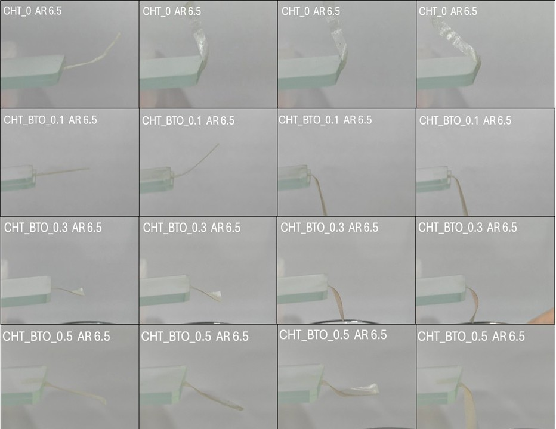

Vapour-responsive chitosan films
Thin films that bend when water vapour reaches them, and a small switch that turns that bending into a closed circuit.
- Context
- M.Tech thesis, IIT Madras
- When
- Dec 2024 to May 2025
- Methods
- Solvent casting, nanofiller loading, vapour response testing
- Tools
- ESP32, Fusion 360
- Shown at
- Poster, Fabricate 2025, IIT Madras
- Links
- Poster (PDF)
Problem
Most thin films used in biomedical devices are static. They do not respond to their surroundings. This project set out to make chitosan-based films that change shape in a controlled way when exposed to water vapour, as a starting point for soft actuators and sensors.
What I did
- Fabricated chitosan films by solvent casting, with and without a barium titanate (BaTiO3) filler at different loadings.
- Measured how each film bent and recovered under water vapour.
- Reduced fabrication effort by 70% over repeated rounds of process changes.
- Built a vapour-driven switch that lights an LED, and a sensor prototype on an ESP32 that streams readings in real time.
Results
- Adding BaTiO3 clearly changed how the films bent in response to water vapour.
- The films are a promising low-cost material for humidity sensors and vapour-triggered alarms.
